PayPal Static Site Generator arrow_drop_down
A Site Building Tool For Small Businesses and Entrepreneurs
2019 to 2020
ASU Computer Science Capstone Project
How does one go about increasing the amount of eyes on their business and it's products? A website, of course! It's an easy way to not only increase sales, but gain exposure and spread the vision of your business.
Enabling Small Business Owners and Individuals Alike
Our static site generator takes basic text-based input data from Markdown files and outputs a simple, fully-functional e-commerce website with a modern, high-contrast theme.
The Team
I worked on the project with a team of five ASU Computer Science students to tackle the mission statement. Everyone had a main focus of their work from documentation, PayPal implementation, UX design, and more. Of course, I chose the role of UX Designer.
A Straight Line is the Shortest Path
User Journey
The user should immediately appear on the storefront, viewing the shop owner's products. Once the user determines which product(s) they want, they can add it to their cart and checkout or they can view the product's detail page first. The user can also filter the products with a simple categorical dropdown menu.
Wireframes
After looking through several storefront sites, mostly content creator merchandise stores, I knew I wanted to present a high-contrast, clean, and modern theme to the team and lead engineers. I wanted to use black and white as my main colors, and allow the product images to create the accents automatically. This way, more attention is applied to the products and the site appears more tailored to the owner. The tool I used to create the first iteration was Figma.
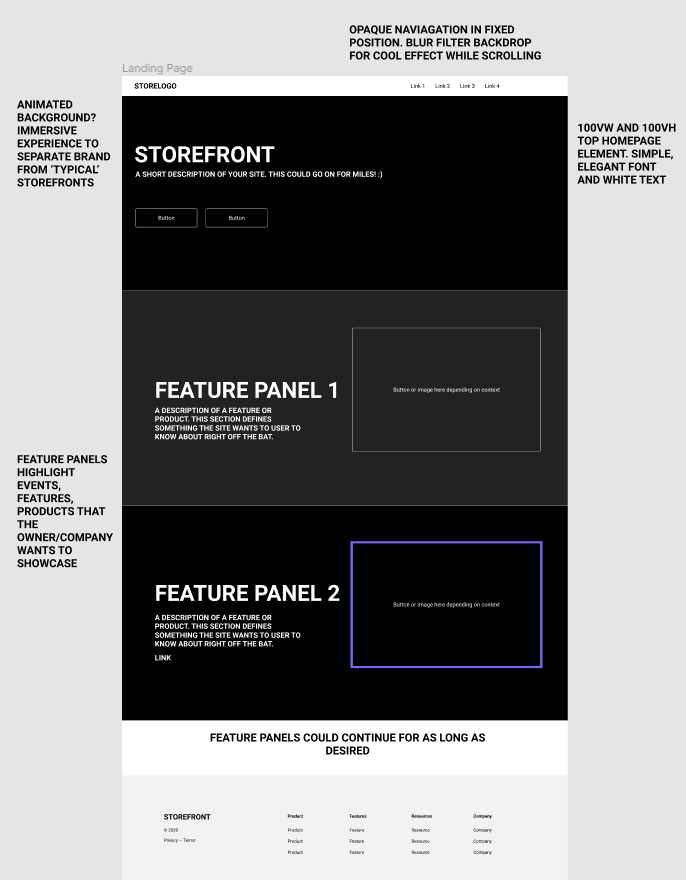
Mockup 1: Figma
UI Design
After the completion of the first iteration, the Lead UX Designer at PayPal joined the Capstone team. He allowed me access to a tool called UXPin, which builds mockups and wireframes based on web code, rather than graphical images and objects. This was an amazing opportunity for me because when I'm designing my own web elements, I think in code.
My philosophy: something that's going to end up as code, should start as code.
I took the ability to use this tool as a chance to show the team what I can do. I decided to create a high-fidelity, responsive mockup for the website.

Mockup 2: Prototyping in UXPin
Images From The Project


We Deployed the An Example Output Site
Example Output Site"Over the course of one of the most challenging times to the world, you guys worked through a lot of issues together, collaborated well, and regularly demoed great progress using the agile workflow, and that’s pretty dang cool."
Senior Software Engineer - PayPal SRE
Costco E-Commerce Redesign arrow_drop_down
A Feature Re-design Intended to Test Factors of User Experience
Fall 2019
During my time at ASU, I discovered my passion for User Experience work while taking a class called Human Computer Interaction. In the class, we discussed UX practices, techniques, and the psychology of people interacting with software. Along basic assignments, we engaged in a semester-long project where we were to choose an e-commerce website and redesign a set of features with the intent to improve an array of quantitative factors.
Identifying Site Issues
During our analysis of the current implmentation of Costco's website, we discovered three core issues: the number of redirections needed to complete basic tasks, a cluttered search filter element on the search results page, and an isolated cart functionality requiring an additional redirection.
Persona Creation
Now that the issues had been identified, the preliminary steps needed to be completed. The first of which was the generation of personas.
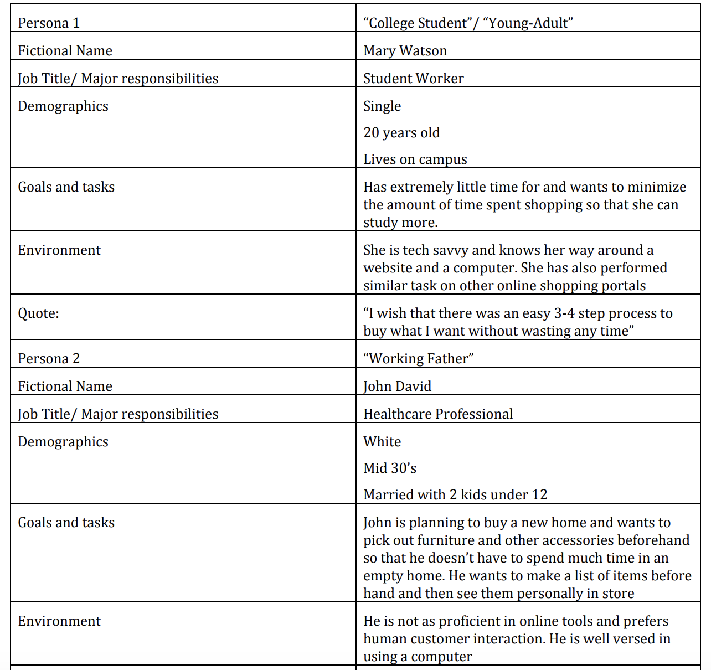
A sample of the team's personas
Tasks for Participants
During the mockup and prototyping phase, we devised tasks that our research participants would attempt to accomplish during our evaluation.
One example of a task we came up with was: given a starting point (home page), the user is to navigate to the "Outdoor" section of the site and find the "Patio and Grill" sub-section. Once there, the user should search for all electric grills between 300 and 800 dollars using the site's filtration system. Then, the user should add the most expensive grill to their cart and verify that the correct grill was added.
A side-by-side view of the original filter versus the redesign's
A/B Testing
After our prototype was finished and ready for testing, it was time to put it to the test. A set of 14 test participants were gathered and briefed on the tasks they would be completing. Some participants were put on the original site and the rest on the redesign. They would be given the same task to allow us, as researchers, to directly compare number of redirects, time on task, number of clicks, and overall emotional reaction (guaged in a survey and viewed on video).
Test Results and Questionaires
All of the participant's videos were viewed and the data was gathered. From there, T-Tests were performed on the results to determine wether the changes positively affected the user experience. Additionally, all participants were asked to complete a post-experience questionaire to help us correlate visible emotion in the videos to the user's true feelings. This was not a part of the T-Tests, as emotion is difficult to quantitatively evaluate.
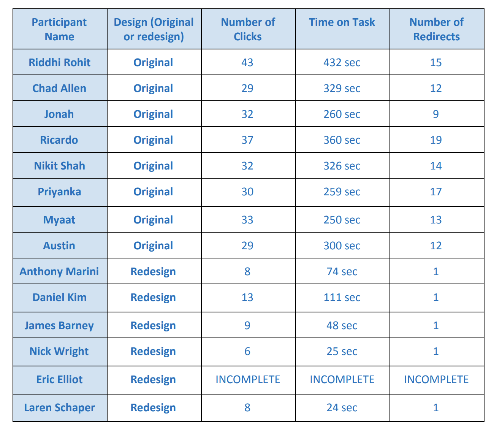
Some of the test results from the experiment
It was determined that all of the changes significantly, and positively, affected the user experience across the board. The average time on task, as well as the number of clicks and redirects, was reduced and it was reported that using the redesign was easy and pleasant to use.
Images From The Project
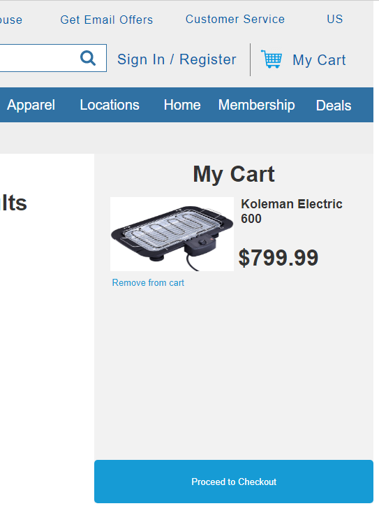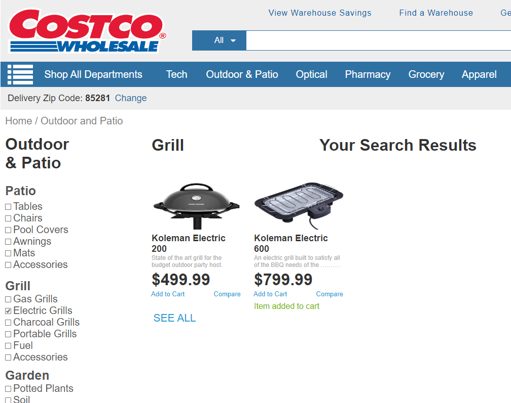
Opportunity Hack Software Showcase arrow_drop_down
Hosting Endorsed Software for Non-Profit Organizations
Summer 2020
Over the Summer of 2020, I participated in a volunteer software engineering internship. I designed, developed and deployed a website for Opportunity Hack, a subsidiary of PayPal, that listed company-endorsed software specifically for non-profits.
I led a small team of graduate students at ASU in attempt to develop the website. Together, we created a platform that Opportunity Hack can dynamically control using a Content Management System (CMS) and continuously deploy using Netlify. We also used the Netlify Identity REST API to facilitate user logins and registrations.
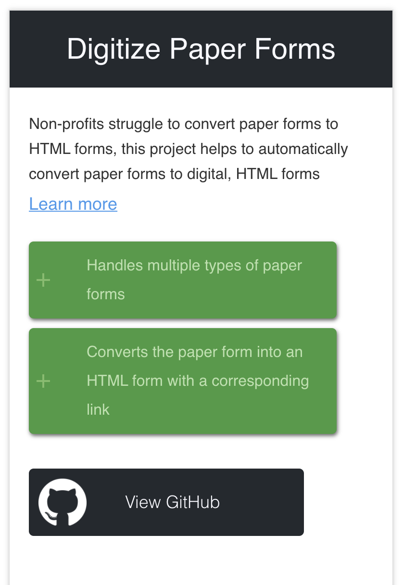
Thumbnail element for a software solution
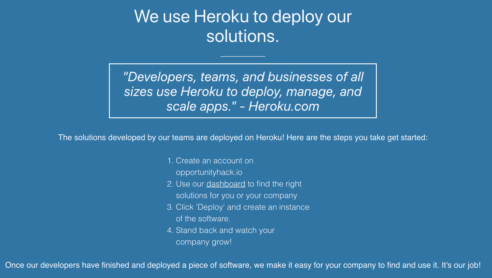
A section describing an aspect of Opportunity Hack
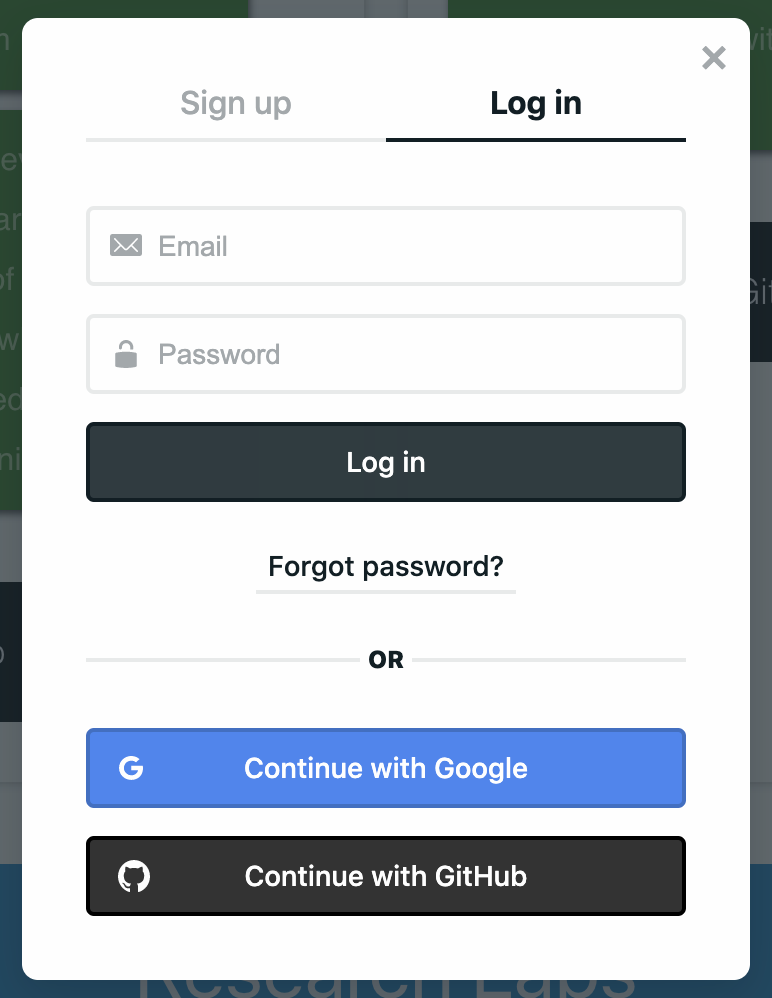
The login and registration UI displayed through the REST API
We Deployed the Platform
View the SiteIOS Image to Geolocation Conversion App arrow_drop_down
Mobile Utility App Intended to Reduce Time Obtaining Directions
Summer 2020 to Present (Side project)
Over the Summer of 2020, my father and I developed an iOS utility application that converts text from images (captured with a document scanner) into a geolocation and provides turn-by-turn directions from your current location.
Intended Audience
The app went through several desgin iterations to ensure usability at all technical experience levels but users that frequently engage in delivery activities would find this functionality particularly useful. Also, users that find themselves in foreign countries where addresses are formatted differently than their home country could take a picture of an address and wouldn't have to fumble around with formatting, special characters, or unfamiliar languages.
The Design, An Iterative Process
At first, the application was presented to users in a more traditional and immersive way. There was multiple screens, including a landing page that connected users to the 2 other main pages.
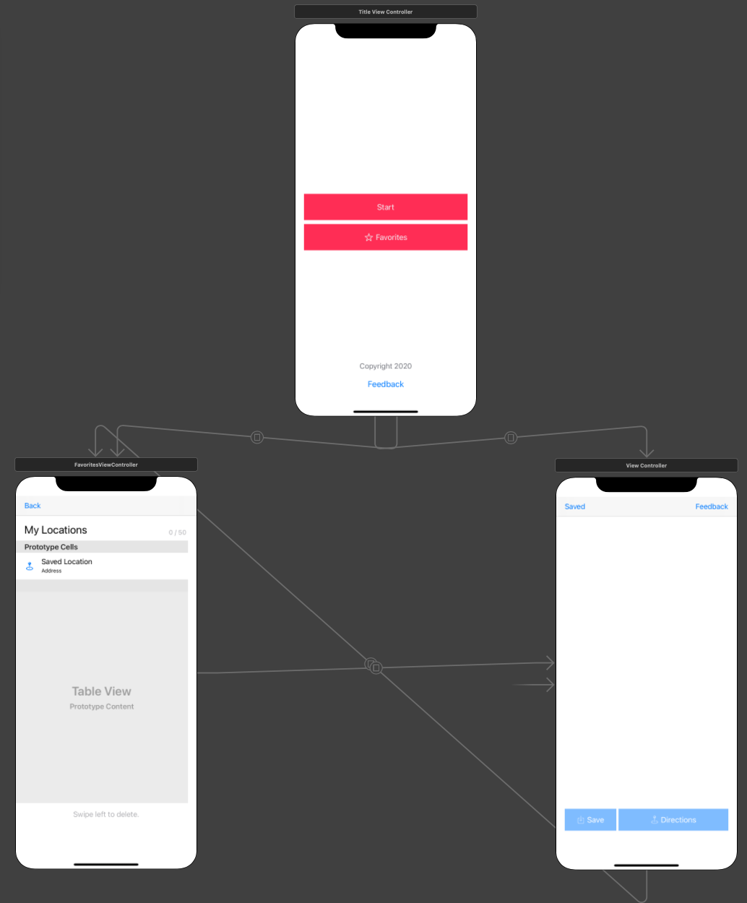
The storyboard showing all three main screens.
Transition to Utility
We quickly realized that the landing screen was entirely unnecessary. It was a waste of time for the users. From a quantitative standpoint, the users would likely spend approximately 5 more seconds if they were previously acquainted with the software. Those extra seconds would be spent not on the core functionalities but on multiple views loading and navigating between screens.
Additonally, after deprication of the landing screen, we automatically started the camera tool upon loading of the main view. This reduces 'time on task' with regard to obtaining your directions. If the user is, for some reason, confused by the camera and immediately exits the tool, they are greeted with instructions and a simple UI to get them back on track quickly.
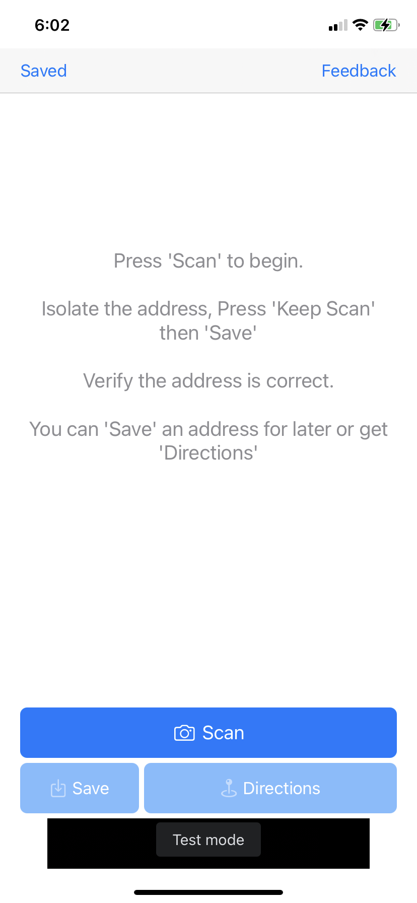
Main screen user interface.
Features
Users can take a picture of a written (preferrably typed) address and then immediately get directions from their current location or they can save that location for later. Users can persistently save up to 50 locations. There is also an in-app link to a Google Forms page where they can give feedback.
Images From The Project
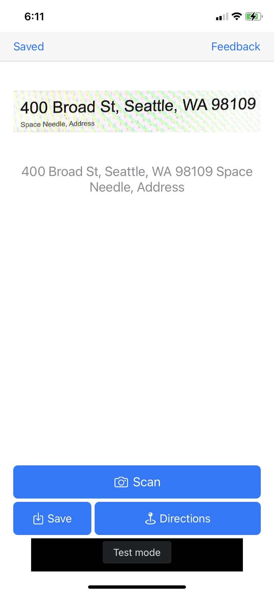
Main screen after capturing an image.
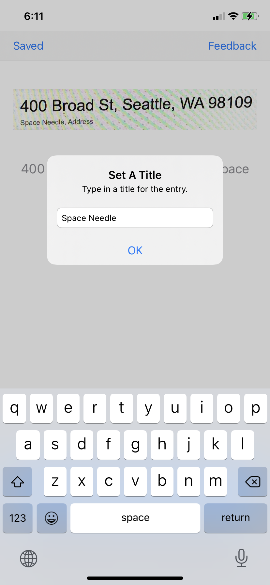
User setting a name for their location.
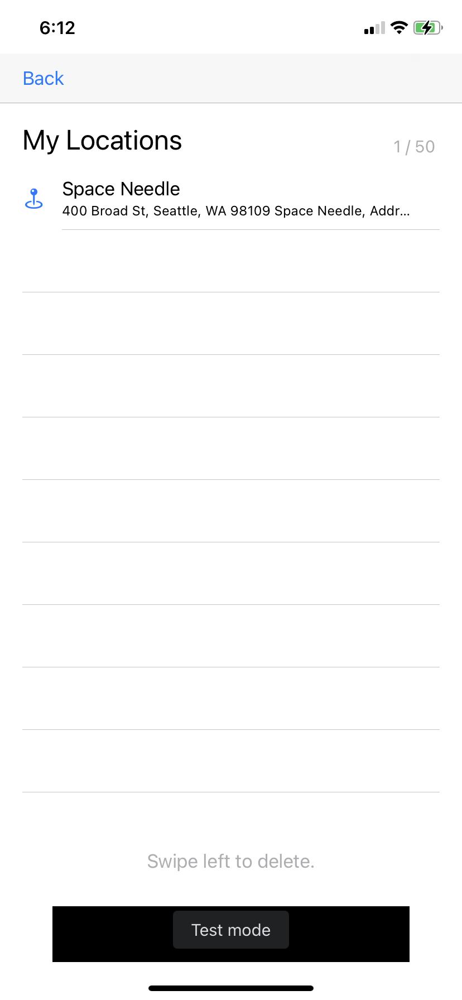
Saved locations screen.
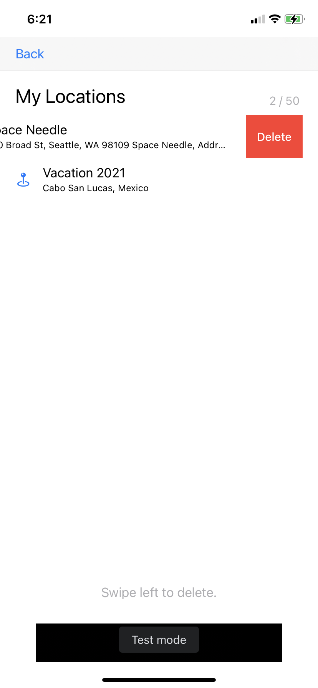
Users can delete an entry with a simple swipe.
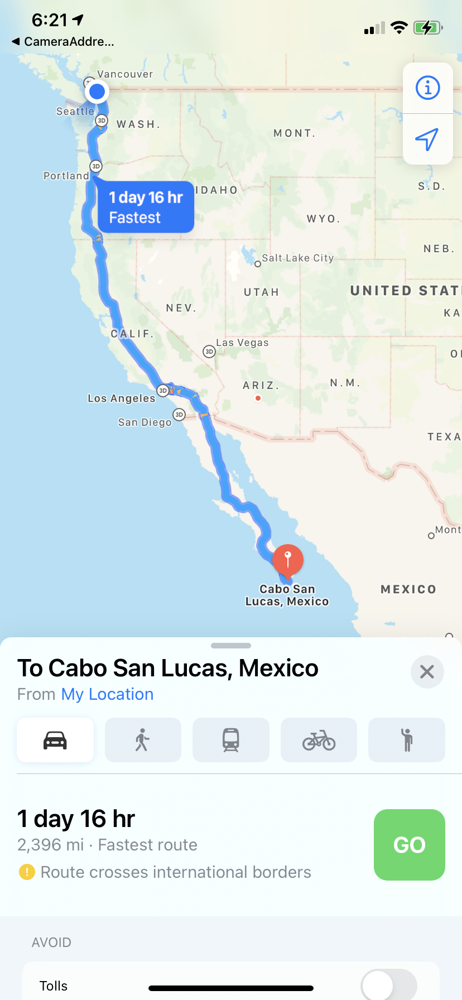
External map application used to carry out directions. Obtainable in 1 click.